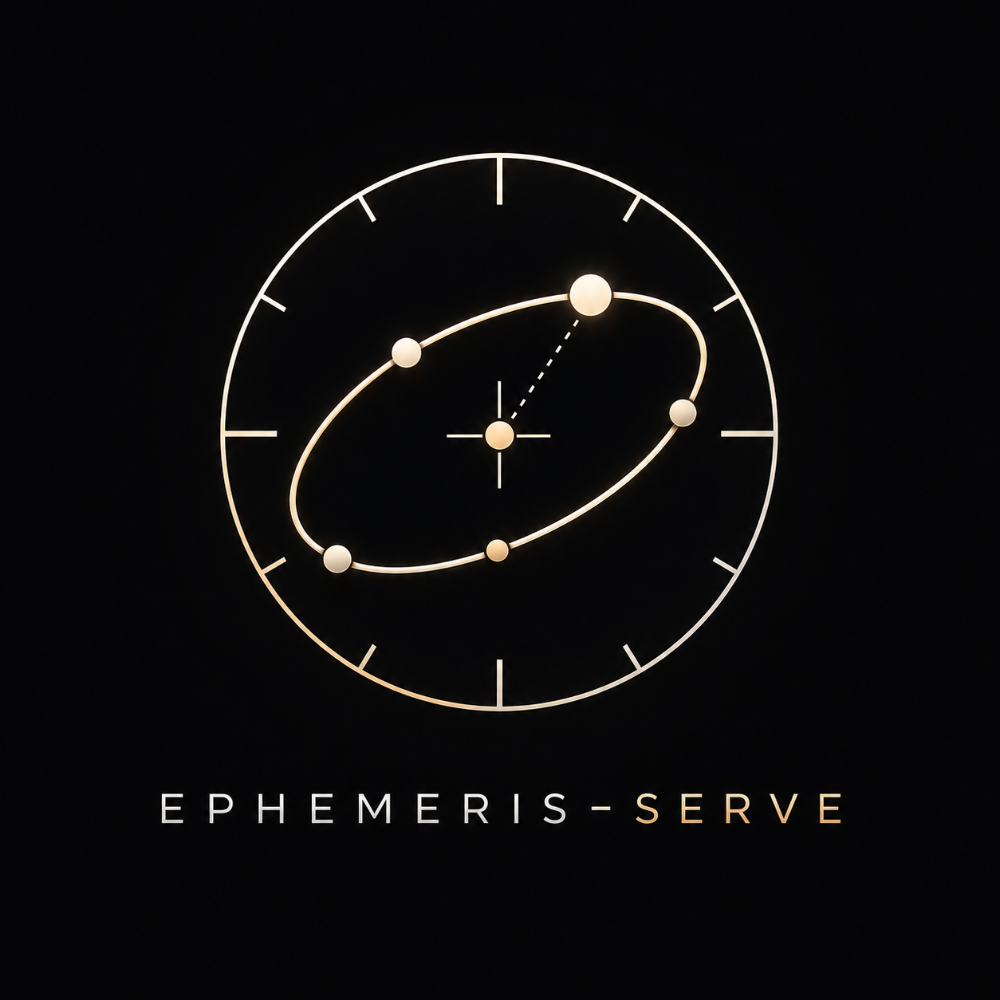
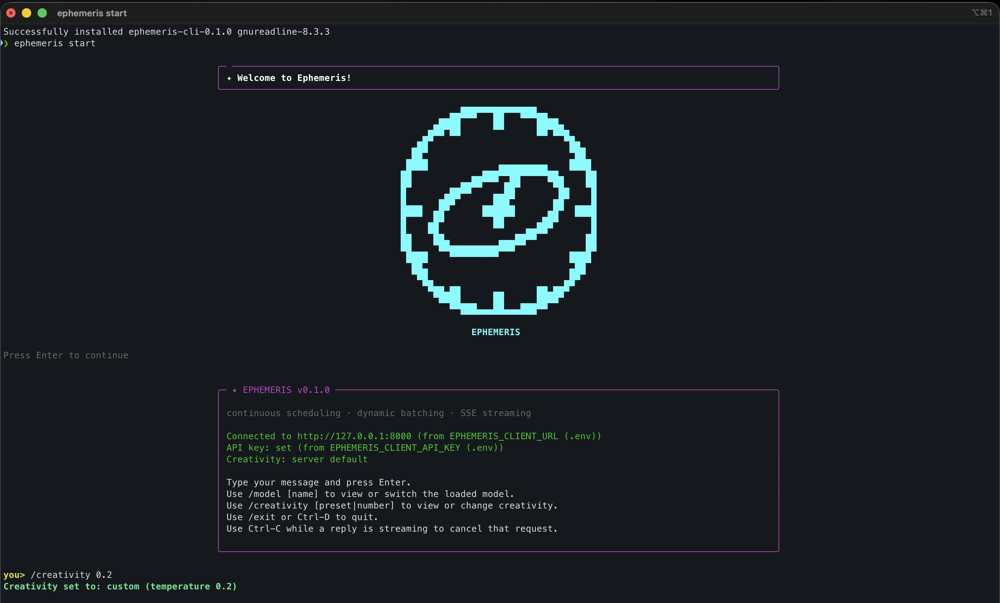
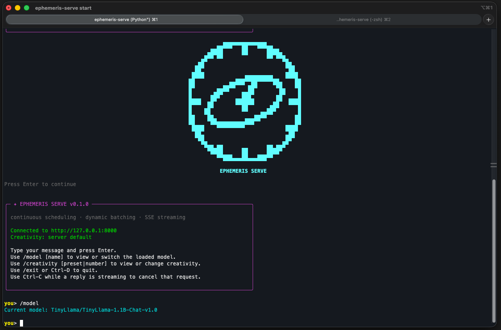
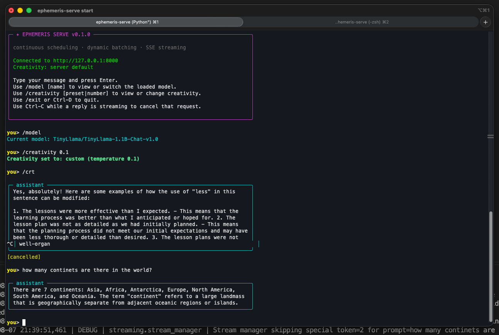

EPHEMERIS · SERVENever wait for a full batch.
Ephemeris Serve is an LLM inference server built around one idea: a request should never sit idle while the batch fills up. A continuous scheduler folds new requests into the batch mid-flight, a paged KV cache lets prefill and decode share the same forward pass, and every token streams back over SSE the moment it's sampled.
What the scheduler actually does
six things, working together
Continuous scheduling
New requests join an already-running batch step, instead of waiting for the current one to finish.
Mixed prefill + decode
A paged KV cache lets a brand-new prompt and an in-progress generation share the same forward pass.
SSE token streaming
Decoded text streams to the client the moment each token is sampled — no buffering full sentences.
Cancellation & timeouts
A disconnected client stops consuming compute mid-generation; deadlines evict requests that overstay.
Hot model swap
Swap the loaded model via /api/model, draining in-flight requests first — no restart.
Metrics & health
Queue latency, batch occupancy, and cache utilization, exposed on /api/metrics.
Quick start
python 3.12+ · gpu optional
Prerequisites: Python 3.12+, a supported GPU (optional), and access to the Hugging Face Hub for authenticated model downloads.
# sync deps, install the CLI, start the server $ make build-ephemeris
$ python -m venv .venv $ source .venv/bin/activate $ pip install -e . $ python main.py
# in another terminal $ ephemeris-serve start /model, /creativity work mid-session
$ ephemeris-serve serve \
--model Qwen/Qwen2.5-0.5B
CLI chat client
ephemeris-serve start
ephemeris-serve ships two subcommands: serve starts the inference server, and start is a REPL that talks to an already-running server over /api/generate's SSE stream. --creativity picks a friendly sampling-temperature preset (deterministic, balanced, creative, high-freedom); both the model and the creativity level can be changed mid-session with /model and /creativity.



Learn more
source & internals
API reference
Every endpoint, request/response schema, and a curl example.
Technical documentation
Architecture, module reference, and known behavior, in depth.
Changelog
What shipped, what it fixed, and why — every release.